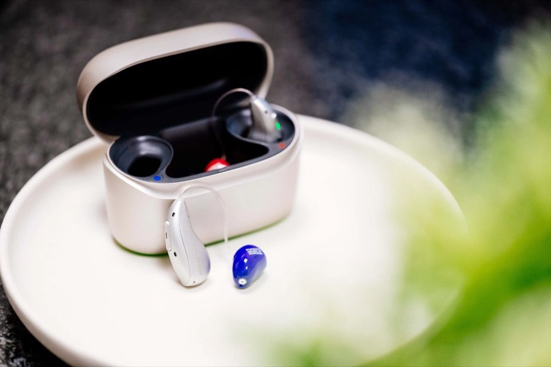
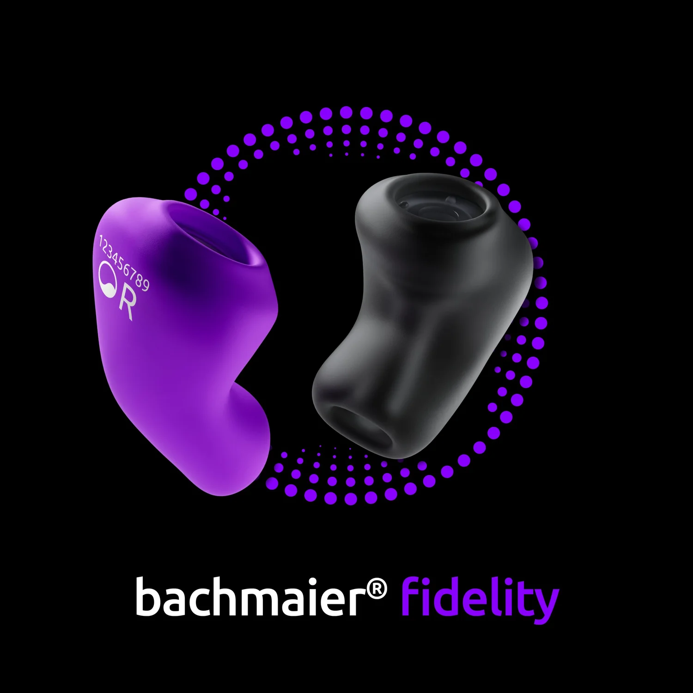
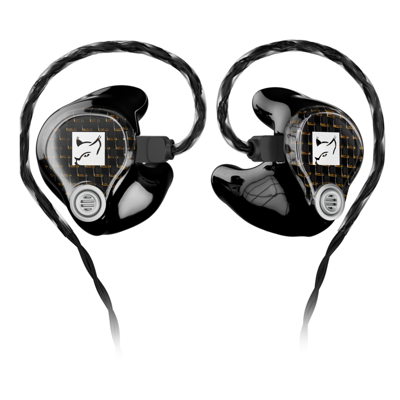

Hörgeräte & Hörsysteme
Von Nulltarif bis High-End — individuell angepasst mit der Hoffnungsohr-Target Methode. Diskret, modern, für Ihren Alltag.
Mehr zu Hörgeräten

Als inhabergeführter Meisterbetrieb legen wir besonderen Wert auf persönliche Nähe, Vertrauen und Verlässlichkeit. Johannes Penzel kennt Sie und Ihren Alltag — kein Filialpersonal, keine Konzernvorgaben.
Sie erhalten bei uns weit mehr als nur ein Hörgerät: individuelle Hörsystemberatung mit der einzigartigen Hoffnungsohr-Target Anpassung, gezieltes Hörtraining, spezialisierte Tinnitus-Hilfe und langfristiger persönlicher Service.
Klar, ehrlich, ohne Umwege. Beim Hoffnungsohr gibt es keine versteckten Kosten und keinen Kaufzwang.
Kosten
Hörgeräte gibt es ab 0 € über Ihre Krankenkasse (Nulltarif-Versorgung) bis zu rund 3.000 € je Gerät für Premium-Hörsysteme. Mit gesetzlicher Krankenversicherung zahlen Sie lediglich die Zuzahlung von 10 € je Gerät. Aufzahlungsgeräte mit mehr Leistung beginnen ab 350 €.
Zur Preisübersicht →Krankenkasse
Alle gesetzlich Versicherten mit ärztlich bestätigtem Hörverlust haben Anspruch auf ein volldigitales Markenhörgerät ohne Aufzahlung. Die Kasse übernimmt bis zu 741 € je Gerät (Stand 2025). Hoffnungsohr rechnet direkt mit Ihrer Kasse ab — Sie kümmern sich um nichts.
Mehr zur Kostenübernahme →Zeitaufwand
Vom ersten Hörtest bis zur finalen Anpassung vergehen in der Regel 3 bis 4 Wochen — inklusive unserer 21 Tage Alltagserprobung. Der erste Termin dauert rund 60 Minuten. Danach folgen 1–2 Feinanpassungen, bis das Hörgerät perfekt sitzt und klingt.
Termin vereinbaren →Erster Besuch
Beim ersten Besuch führt Johannes Penzel persönlich einen kostenlosen Hörtest durch (ca. 15 Min.), analysiert Ihre typischen Hörsituationen und berät Sie zu passenden Hörsystemen — von Nulltarif bis High-End. Kein Kaufzwang, keine Voranmeldung nötig. Einfach vorbeikommen.
Jetzt Hörtest vereinbaren →Echte Erfahrungen aus Rösrath, Bergisch Gladbach, Overath und der Region.
„Endlich ein Akustiker, der sich wirklich Zeit nimmt. Die Anpassung war so gut, dass ich mein Hörgerät nach zwei Tagen schon vergessen hatte, es zu tragen — weil es sich so natürlich anfühlte."
„Die 21 Tage Garantie hat mir die Entscheidung leicht gemacht. Herr Penzel hat sich in dieser Zeit dreimal Zeit genommen für Feinanpassungen — ohne dass ich nochmal darum bitten musste."
„Nach Jahren mit einem Kettenakustiker bin ich jetzt beim Hoffnungsohr. Der Unterschied ist enorm: Ich verstehe Gespräche am Tisch wieder, ohne zu raten. Hätte ich früher wechseln sollen."
Einfach. Persönlich. Ohne Risiko. — Und das schon ab Ihrem ersten Besuch.
Ein professioneller Hörtest beim Hoffnungsohr zeigt in 15 Minuten, wie gut Sie hören — kostenlos, ohne HNO-Rezept und ohne Voranmeldung nötig.
Kostenlos & unverbindlichJohannes Penzel bespricht mit Ihnen Ihren Alltag, Ihre Hörsituationen und Wünsche. Wir zeigen Ihnen passende Hörsysteme — von Nulltarif bis High-End.
Inhabergeführt & individuellTragen Sie Ihr Hörgerät 21 Tage lang in Ihrem echten Alltag. Mit unserer Hörerfolgsgarantie: Wenn Sie nicht überzeugt sind, geben Sie es zurück — kein Risiko.
Garantierter HörerfolgWir sind so überzeugt von unserer Hoffnungsohr-Target Anpassung, dass wir Ihnen 21 Tage Zeit geben, Ihr neues Hörsystem im Alltag zu erleben. Gefällt es Ihnen nicht? Sie geben es einfach zurück — keine Kosten, keine Verpflichtung.
Hörakustik-Meisterservice, weit über den reinen Verkauf hinaus.
Von Nulltarif bis High-End — individuell angepasst mit der Hoffnungsohr-Target Methode. Diskret, modern, für Ihren Alltag.
Mehr zu Hörgeräten
Ob Freizeit, Beruf oder Kinder — Ihr individuell gefertigter Gehörschutz für jede Situation.
Mehr zu Gehörschutz
Für Musiker, Gamer und Audiophile — Custom In-Ears mit perfektem Sitz und maximalem Klang.
Mehr zu In-EarWas uns von Filialisten unterscheidet: Persönlichkeit, Methode und echter Einsatz für Ihren Hörerfolg.
Kein wechselndes Filialpersonal. Johannes Penzel kennt Sie, Ihre Hörgeschichte und Ihren Alltag — von der ersten Beratung bis zur langfristigen Nachsorge.
Kein Kettenstandard. Unsere einzigartige Anpassungsmethode kalibriert Ihr Hörgerät exakt auf Ihre persönliche Hörumgebung — für ein natürlicheres Hörerlebnis von Anfang an.
Wir haben keine Umsatzziele eines Konzerns im Rücken. Wir empfehlen Ihnen das Hörgerät, das wirklich zu Ihnen passt — auch wenn das das günstigere Modell ist.
Kurze Wege statt langer Anfahrt: Hoffnungsthal liegt direkt an der Kölner Stadtgrenze. Persönliche Beratung und Nachsorge ohne großen Aufwand.

Partner aller gesetzlichen Krankenkassen — Ihre Kasse zahlt mit
Wir rechnen direkt mit Ihrer Krankenkasse ab — Sie kümmern sich um nichts.
Unser Einzugsgebiet
Als inhabergeführter Meisterbetrieb in Rösrath-Hoffnungsthal sind wir der persönliche Hörakustiker für den Rheinisch-Bergischen Kreis und die angrenzenden Ortschaften. Unsere Kunden kommen aus Rösrath selbst, aus Bergisch Gladbach, Overath, Lohmar, Odenthal und aus den Kölner Stadtteilen im Süden und Osten der Stadt.
Ob Sie aus Hoffnungsthal, Forsbach oder Volberg kommen — oder aus Bergisch Gladbach, Refrath, Bensberg oder Schildgen: Hoffnungsohr liegt für Sie ohne großen Umweg. Patienten aus Overath, Untereschbach und Brombach erreichen uns in rund 10 bis 12 Minuten, aus Lohmar, Honrath und Odenthal in gut 15 Minuten.
Auch aus dem Großraum Köln — etwa aus Köln-Porz, Köln-Eil, Köln-Mülheim oder Köln-Kalk — sind wir gut erreichbar, ohne in die Innenstadt fahren zu müssen. Viele Kunden schätzen gerade das: persönliche Nähe und kurze Wege, die ein inhabergeführtes Fachgeschäft bietet.
Wir bieten kostenlosen Hörtest in Rösrath, individuelle Hörgeräte-Anpassung und langfristige Nachsorge — für alle Patienten aus dem Rheinisch-Bergischen Kreis. Auf Wunsch sind auch Hausbesuche für Menschen mit eingeschränkter Mobilität möglich.
Sie sind nicht sicher, ob wir in Ihrer Nähe sind? Rufen Sie uns an — wir helfen Ihnen gerne weiter. 02651 2822